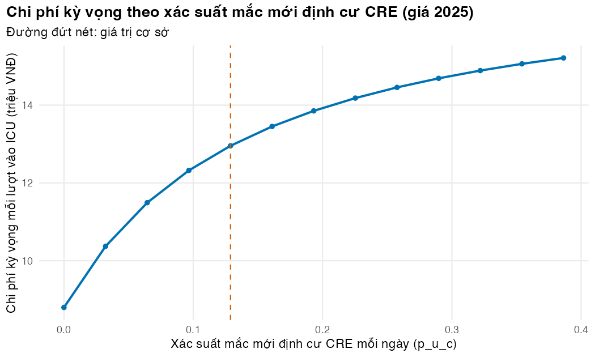

if (!isTRUE(l10n_info()[["UTF-8"]])) invisible(Sys.setlocale("LC_CTYPE", "en_US.UTF-8"))
source("../_shared/R/helpers.R")
source("../_shared/R/vn_data.R")
source("code/model.R")
options(warnPartialMatchDollar = TRUE) # `$` that silently matches a shortened name now warns
library(ggplot2)
p_sim <- read_params("params/amr_sim.csv")
q <- load_icu_params() # params/icu_markov.csv + the shared ICU bed-day and drug prices
d <- read_params("params/teaching_demos.csv")
iso <- simulate_isolates(p_sim, seed = 2025)Bài 3: Hàm, cấu trúc điều khiển, vòng lặp và vectơ hóa
Viết mô hình thành hàm của tham số, và biết khi nào cần vòng lặp, khi nào không
Vì sao bạn nên quan tâm?
Phòng Kiểm soát nhiễm khuẩn (KSNK) của một bệnh viện tuyến trung ương đề xuất sàng lọc CRE cho mọi người bệnh khi vào ICU và xếp người mang khuẩn chung buồng. Ở ICU nhi của Bệnh viện Nhi Trung ương, cách làm này đã kéo tỷ lệ mắc mới (acquisition) CRE giảm rõ rệt (Garpvall và c.s. 2021). Với mô hình của module, mỗi lượt vào ICU tốn kỳ vọng 12,954,108 VNĐ (giá 2025), bằng 1.5 tháng thu nhập bình quân của một người lao động (Cục Thống kê (Bộ Tài chính) 2026). Nếu xác suất mắc mới giảm một nửa, chi phí giảm 1,462,107 VNĐ mỗi lượt và số ngày nhiễm khuẩn CRE kỳ vọng giảm từ 0.66 xuống 0.42 ngày. Một kịch bản chưa đủ để quyết định có đầu tư hay không; bài này dạy viết mô hình thành hàm để chạy nó cho cả một dải giá trị.
Mục tiêu học tập
Sau bài này, bạn có thể:
- Viết một hàm có đối số mặc định, kiểm tra đầu vào bằng
stopifnot()và trả về một giá trị. - Đóng gói một mô hình thành hàm của bảng tham số, rồi chạy nó cho nhiều kịch bản.
- Dùng
if/else,forvàwhileđúng chỗ, và biết khi nào cầnifelse()thay choif. - Nhận ra phép tính nào bắt buộc phải lặp và phép tính nào vectơ hóa được.
- Tránh lỗi “nối dài vectơ trong vòng lặp” bằng cách cấp phát trước.
Ý chính
- Một mô hình là một hàm của tham số: tham số vào, kết quả ra. Mọi phân tích độ nhạy sau này chỉ là gọi lại hàm đó với tham số khác.
- Hàm tốt thì ngắn, làm một việc, kiểm tra đầu vào và dừng kèm thông báo rõ ràng thay vì trả về một con số sai.
- Sửa đối số bên trong hàm không làm thay đổi đối tượng bên ngoài. R sao chép đối tượng khi bạn sửa nó (copy-on-modify).
ifchỉ làm việc với một giá trị. Với cả vectơ, dùngifelse()hoặc chỉ mục logic.- Muốn có mọi hàng của vết đoàn hệ (Markov trace), ta lặp theo chu kỳ vì hàng t cần hàng t − 1; lặp cũng là cách tự nhiên khi ma trận chuyển đổi theo thời gian. Chi phí và kết cục gắn với trạng thái, phân loại kết quả và cờ đa kháng thì vectơ hóa được.
- Cấp phát trước (preallocation) kết quả (
numeric(n),matrix(0, …)) rồi điền vào. Không nối dài vectơ bằngc()trong vòng lặp. - Chi phí tính theo hàng nào của vết là một quy ước: đầu ngày, cuối ngày hay nửa chu kỳ cho tổng khác nhau. Hãy chọn một cách, ghi rõ và dùng nhất quán.
sapply()áp dụng một hàm cho từng giá trị; đó là cách chạy một dải kịch bản ngắn gọn.
Nội dung
Hàm: đơn vị xây dựng của mô hình
Một hàm R gồm tên, các đối số và thân hàm; biểu thức cuối cùng trong thân là giá trị trả về. Đối số có thể có giá trị mặc định, ví dụ nonsusceptible = FALSE, nên lời gọi ngắn gọn khi dùng mặc định và vẫn rõ ràng khi đổi. Sách Advanced R giải thích kỹ cơ chế này cho ai muốn đi sâu (Wickham 2019).
Viết mô hình thành hàm có ba lợi ích. Một là kiểm tra được: so sánh kết quả của hàm với một phép tính tay. Hai là tái sử dụng: cùng một hàm chạy cho phân tích cơ sở, phân tích kịch bản và hàng nghìn lần trong PSA. Ba là minh bạch: người đọc thấy rõ đầu vào và đầu ra. Khung mã hóa được đề xuất cho mô hình quyết định trong R xây trên ý tưởng này (Alarid-Escudero và c.s. 2019).
Trong R, hàm không làm thay đổi đối tượng được truyền vào. Khi scenario_cost() sửa p$p_u_c bên trong, R tạo một bản sao; danh sách tham số gốc bên ngoài giữ nguyên. Nhờ vậy, chạy một kịch bản không bao giờ làm hỏng phân tích cơ sở.
Cấu trúc điều khiển
if (điều kiện) { … } else { … }rẽ nhánh theo một giá trịTRUE/FALSE. Dùng để phân loại một giá trị nồng độ ức chế tối thiểu (MIC, minimum inhibitory concentration) theo điểm gãy (breakpoint) hoặc kiểm tra một điều kiện trước khi tính.for (i in seq_along(x)) { … }lặp một số lần đã biết trước. Dùngseq_along(x)thay cho1:length(x), vì khixrỗng thì1:0vẫn sinh ra hai lần lặp.while (điều kiện) { … }lặp cho đến khi điều kiện sai, khi chưa biết trước số lần lặp. Ví dụ: tìm ngày đầu tiên còn dưới 10% đoàn hệ ở khoa hồi sức tích cực (ICU). Luôn đặt giới hạn cho vòngwhile, để nó dừng được ngay cả khi điều kiện không bao giờ sai.
Giá trị MIC và điểm gãy trong bài là giá trị minh họa để luyện lập trình. Khi phân loại kết quả thật, luôn tra phiên bản hiện hành của bảng điểm gãy do Clinical and Laboratory Standards Institute (CLSI) hoặc European Committee on Antimicrobial Susceptibility Testing (EUCAST) công bố.
Vòng lặp hay vectơ hóa?
Vectơ hóa (vectorisation) nghĩa là viết phép tính tác động lên cả vectơ hoặc ma trận cùng lúc. rowSums() và %*% chạy vòng lặp bên trong bằng mã đã biên dịch; ifelse() là mã R nhưng dựa trên các phép toán vectơ hóa. Mã vectơ hóa thường ngắn hơn, ít chỗ sai hơn và thường nhanh hơn.
Không phải phép tính nào cũng vectơ hóa được. Vết đoàn hệ là một quan hệ truy hồi, \(s_{t+1} = s_t P\). Khi \(P\) không đổi, một hàng riêng lẻ vẫn tính được bằng lũy thừa ma trận \(s_0 P^n\) (Bài 2). Nhưng để có mọi hàng của vết, và khi \(P\) đổi theo thời gian hoặc theo lịch sử, ta lặp theo chu kỳ: hàng \(t+1\) được tính từ hàng \(t\). Ngược lại, khi đã có vết, chi phí mọi ngày tính bằng một phép nhân ma trận:
\[ \text{chi phí} = \sum_{t} \sum_{k} \text{vết}_{t,k}\, c_k = \mathbf{1}^\top (\text{vết} \cdot \mathbf{c}). \]
Quy tắc thực hành: lặp theo thời gian khi cần; vectơ hóa theo trạng thái và theo cá thể. M04 sẽ vectơ hóa theo cá thể trong mô phỏng vi mô.
Lặp qua nhiều kịch bản
Muốn biết chi phí thay đổi ra sao khi xác suất mắc mới định cư CRE thay đổi, ta viết hàm scenario_cost(p, giá_trị) rồi gọi nó cho một dãy giá trị bằng sapply(). Đây là dạng đơn giản nhất của phân tích độ nhạy một chiều (OWSA). M01 và M03 sẽ dạy cách làm đầy đủ.
Thực hành
Nạp hàm, ba bảng tham số và bộ dữ liệu mô phỏng.
Hàm đầu tiên tính tỷ lệ đề kháng của một vectơ kết quả S/I/R. Nó loại NA khỏi mẫu số, có đối số mặc định cho định nghĩa “đề kháng”, và dừng nếu nhận sai kiểu dữ liệu. Kiểm tra: kết quả trùng với cách viết một dòng ở Bài 2, và lời gọi sai kiểu trả về thông báo lỗi thay vì một con số.
# A function: inputs (arguments, some with defaults) -> one returned value
prop_resistant <- function(x, nonsusceptible = FALSE) {
stopifnot(is.character(x)) # fail loudly on the wrong input type
x <- x[!is.na(x)] # untested isolates are not in the denominator
flag <- if (nonsusceptible) x %in% c("I", "R") else x == "R"
sum(flag) / length(x) # the last expression is returned
}
mem_aba <- iso$MEM[iso$organism == "A. baumannii"]
c(R_only = prop_resistant(mem_aba), I_or_R = prop_resistant(mem_aba, nonsusceptible = TRUE)) R_only I_or_R
0.7240039 0.7327502 # Same answer as the one-liner used in Lesson 2
stopifnot(abs(prop_resistant(mem_aba) - mean(mem_aba == "R", na.rm = TRUE)) < 1e-12)
# A wrong input type stops with an error instead of returning a silent wrong number
tryCatch(prop_resistant(mem_aba == "R"), error = function(e) conditionMessage(e))[1] "is.character(x) is not TRUE"Mô hình ICU, gói thành một hàm của danh sách tham số. Hàm dựng ma trận, chạy vết và nhân vết với vectơ chi phí theo trạng thái. Kiểm tra: kết quả khớp với icu_outcomes() trong code/model.R.
# A model is a function of its parameters: parameters in, result out
icu_cost <- function(p) {
P <- build_icu_P(p)
s0 <- c(U = 1, C = 0, I = 0, X = 0, D = 0)
trace <- cohort_trace(P, s0, p$n_days)
days <- trace[1:p$n_days, ] # occupancy at the start of each day
sum(days %*% icu_state_costs(p)) # expected cost per admission (VND)
}
cost_base <- icu_cost(q)
stopifnot(abs(cost_base - icu_outcomes(q)$cost) < 1e-6)
fmt_vnd(cost_base)[1] "12,954,108 VNĐ"Chi phí kỳ vọng cho mỗi lượt vào ICU là 12,954,108 VNĐ (giá 2025). Con số này chỉ gồm giá ngày giường BHYT, chi phí phòng ngừa tiếp xúc (giá trị minh họa) và thuốc điều trị nhiễm khuẩn CRE (colistin và meropenem) trong tối đa 30 ngày; nó chưa gồm xét nghiệm, máy thở hay các thuốc khác.
Hàm scenario_cost() đổi một tham số rồi chạy lại mô hình. Kiểm tra: sau lời gọi, q$p_u_c bên ngoài vẫn giữ giá trị trong CSV.
# Changing an argument inside a function does not change the object outside
# (a demonstration: R copies the list when the function modifies it)
scenario_cost <- function(p, p_u_c) {
p$p_u_c <- p_u_c
icu_cost(p)
}
cost_double <- scenario_cost(q, 2 * q$p_u_c)
c(q_p_u_c_after_call = q$p_u_c, cost_double = cost_double)q_p_u_c_after_call cost_double
1.288000e-01 1.445587e+07 stopifnot(q$p_u_c == attr(q, "table")$value[attr(q, "table")$name == "p_u_c"])if/else if/else phân loại một giá trị MIC theo điểm gãy minh họa (nhạy cảm nếu MIC ≤ 1 mg/L, đề kháng nếu MIC ≥ 4 mg/L). sapply() gọi hàm này cho từng phần tử. Kiểm tra: giá trị NA cho ra NA, không bị xếp nhầm vào nhóm nào.
# if / else on ONE value: classify one MIC with (illustrative) breakpoints
classify_one <- function(mic, s_max, r_min) {
if (is.na(mic)) {
NA_character_
} else if (mic <= s_max) {
"S"
} else if (mic >= r_min) {
"R"
} else {
"I"
}
}
sapply(c(0.25, 1, 2, 4, 16, NA), classify_one, s_max = d$bp_s_max, r_min = d$bp_r_min)[1] "S" "S" "I" "R" "R" NA Vòng while tìm ngày đầu tiên còn dưới 10% đoàn hệ ở ICU, rồi so sánh với cách vectơ hóa bằng which(). Vòng lặp có giới hạn theo số ngày của vết và dừng với thông báo lỗi nếu chưa đạt ngưỡng. Kiểm tra: hai cách cho cùng một ngày.
# while: repeat until a condition fails. First day on which the share of the cohort still
# in ICU falls below the threshold (thr_in_icu in params/teaching_demos.csv)
trace <- cohort_trace(build_icu_P(q), c(U = 1, C = 0, I = 0, X = 0, D = 0), q$n_days)
in_icu <- rowSums(trace[, c("U", "C", "I")])
day <- 0
# Always bound a while loop: day < n_days stops it at the end of the trace
while (day < q$n_days && in_icu[day + 1] >= d$thr_in_icu) {
day <- day + 1
}
if (in_icu[day + 1] >= d$thr_in_icu) stop("threshold not reached within n_days")
day[1] 21# The vectorised way gives the same answer without a loop
stopifnot(day == min(which(in_icu < d$thr_in_icu)) - 1)So sánh vòng lặp với vectơ hóa trên 100,000 giá trị MIC mô phỏng. Vòng lặp gọi classify_one() cho từng giá trị; cách vectơ hóa dùng hai lớp ifelse(). Kiểm tra: identical() xác nhận hai kết quả giống hệt nhau.
set.seed(303)
mic <- 2^round(rnorm(d$n_mic, mean = d$mic_log2_mean, sd = d$mic_log2_sd)) # dilution series
# (a) loop with a pre-allocated result vector
t_loop <- system.time({
sir_loop <- character(length(mic))
for (i in seq_along(mic)) sir_loop[i] <- classify_one(mic[i], d$bp_s_max, d$bp_r_min)
})[["elapsed"]]
# (b) vectorised: one call works on the whole vector
t_vec <- system.time({
sir_vec <- ifelse(mic <= d$bp_s_max, "S", ifelse(mic >= d$bp_r_min, "R", "I"))
})[["elapsed"]]
stopifnot(identical(sir_loop, sir_vec))
table(sir_vec)sir_vec
I R S
17400 22830 59770 c(loop_sec = t_loop, vectorised_sec = t_vec) loop_sec vectorised_sec
0.043 0.011 Trên máy tạo ra trang này, vòng lặp mất 0.043 giây, còn cách vectơ hóa mất 0.011 giây. Thời gian thay đổi theo máy và theo lần chạy. Lý do chính để vectơ hóa ở đây là mã ngắn hơn và ít chỗ sai hơn.
Tiếp theo là cái bẫy phổ biến nhất về tốc độ: nối dài vectơ bằng c() trong vòng lặp. Mỗi lần nối, R chép toàn bộ vectơ sang chỗ mới. Kiểm tra: hai kết quả giống hệt nhau, chỉ khác thời gian chạy.
# Growing a vector inside a loop copies it again and again: avoid
n_small <- 20000
t_grow <- system.time({
out_grow <- c()
for (i in 1:n_small) out_grow <- c(out_grow, mic[i] <= d$bp_s_max)
})[["elapsed"]]
t_prealloc <- system.time({
out_pre <- logical(n_small)
for (i in 1:n_small) out_pre[i] <- mic[i] <= d$bp_s_max
})[["elapsed"]]
stopifnot(identical(out_grow, out_pre))
c(grow_sec = t_grow, preallocated_sec = t_prealloc) grow_sec preallocated_sec
0.235 0.003 Với 20,000 phần tử, nối dài mất 0.235 giây, cấp phát trước mất 0.003 giây. Khoảng cách này tăng nhanh hơn tuyến tính khi vectơ dài ra.
Tính chi phí từ vết đoàn hệ theo hai cách: hai vòng lặp lồng nhau (ngày × trạng thái) và một phép nhân ma trận. Kiểm tra: hai kết quả bằng nhau đến sai số làm tròn.
# Over cycles a cohort model needs a loop (day t needs day t - 1), but rewards do not.
costs <- icu_state_costs(q)
days <- trace[1:q$n_days, ]
cost_loop <- 0
for (t in 1:nrow(days)) {
for (s in colnames(days)) cost_loop <- cost_loop + days[t, s] * costs[[s]]
}
cost_vec <- sum(days %*% costs) # one matrix product
stopifnot(abs(cost_loop - cost_vec) < 1e-6)
fmt_vnd(cost_vec)[1] "12,954,108 VNĐ"Còn một quyết định mà chính đoạn mã trên giấu đi: chi phí của ngày \(d\) được gán cho hàng nào của vết? Vết có \(n+1\) hàng (ngày \(0, \dots, n\)) nhưng chỉ có \(n\) ngày cần tính chi phí. icu_outcomes() dùng trạng thái ở đầu ngày (hàng \(0, \dots, n-1\)), hợp lý cho ngày giường vì người bệnh có mặt khi ngày bắt đầu. Đếm theo cuối ngày (hàng \(1, \dots, n\)) hoặc theo nửa chu kỳ (trung bình hai cách) cho tổng khác. Ta tính cả ba để thấy quy mô chênh lệch. Kiểm tra: cách đầu ngày khớp với icu_outcomes(), và cách nửa chu kỳ nằm giữa hai cách còn lại.
# Which rows of the trace are charged for day d? Three conventions, three totals.
n <- q$n_days
cost_start <- sum(trace[1:n, ] %*% costs) # occupancy at the START of each day (rows 0..n-1)
cost_end <- sum(trace[2:(n + 1), ] %*% costs) # at the END of each day (rows 1..n)
cost_half <- (cost_start + cost_end) / 2 # half-cycle: average of the two
stopifnot(abs(cost_start - icu_outcomes(q)$cost) < 1e-6) # icu_outcomes() uses the start-of-day rule
# The lesson says: end-of-day and half-cycle are LOWER than start-of-day, half-cycle lies between
stopifnot(cost_end < cost_start, cost_half < cost_start, cost_half > cost_end)
timing_tab <- data.frame(convention = c("start of day", "end of day", "half-cycle"),
cost_million = c(cost_start, cost_end, cost_half) / 1e6)
timing_tab$vs_start <- timing_tab$cost_million / timing_tab$cost_million[1] - 1
timing_tab$cost_million <- round(timing_tab$cost_million, 3)
timing_tab$vs_start <- round(timing_tab$vs_start, 4)
timing_tab convention cost_million vs_start
1 start of day 12.954 0.000
2 end of day 12.048 -0.070
3 half-cycle 12.501 -0.035So với cách đầu ngày, cách cuối ngày cho chi phí thấp hơn 7.0% và cách nửa chu kỳ thấp hơn 3.5%. Không cách nào “đúng” tuyệt đối; điều bắt buộc là chọn một quy ước, nói rõ nó trong báo cáo và dùng nhất quán cho mọi kết quả. M02 Bài 3 dạy hiệu chỉnh nửa chu kỳ đầy đủ.
Chạy mô hình cho một dãy giá trị cách đều của xác suất mắc mới định cư CRE, từ 0 đến ba lần giá trị cơ sở, bằng sapply() và bằng vòng for. Kiểm tra: hai cách cho cùng kết quả, và chi phí tăng dần theo xác suất mắc mới.
# One parameter, many values: sapply() applies a function to each value
grid_puc <- seq(0, 3 * q$p_u_c, length.out = 13)
sweep_cost <- sapply(grid_puc, function(v) scenario_cost(q, v))
# The same with a for loop (pre-allocated)
sweep_loop <- numeric(length(grid_puc))
for (k in seq_along(grid_puc)) sweep_loop[k] <- scenario_cost(q, grid_puc[k])
stopifnot(all.equal(sweep_cost, sweep_loop), all(diff(sweep_cost) > 0))
sweep_df <- data.frame(p_u_c = grid_puc, cost_million = sweep_cost / 1e6)
round(sweep_df[c(1, 5, 13), ], 4) p_u_c cost_million
1 0.0000 8.7977
5 0.1288 12.9541
13 0.3864 15.2130cost_zero <- sweep_cost[1]
cost_triple <- sweep_cost[13]
steps <- diff(sweep_cost) # extra cost per step of p_u_c
c(first_step = steps[1], last_step = steps[length(steps)])first_step last_step
1573484.6 151549.9 concave <- steps[1] > steps[length(steps)] # TRUE: each extra step adds less cost than the one beforeVẽ chi phí theo xác suất mắc mới, với đường đứt nét dọc đánh dấu giá trị cơ sở. Kiểm tra: đường đi lên từ trái sang phải, và đường đứt nét nằm đúng tại p_u_c của tệp CSV.
fig_sweep <- ggplot(sweep_df, aes(p_u_c, cost_million)) +
geom_line(colour = pal_course[1], linewidth = 0.9) +
geom_point(colour = pal_course[1]) +
geom_vline(xintercept = q$p_u_c, linetype = "dashed", colour = pal_course[2]) +
labs(x = "Xác suất mắc mới định cư CRE mỗi ngày (p_u_c)",
y = "Chi phí kỳ vọng mỗi lượt vào ICU (triệu VNĐ)",
title = "Chi phí kỳ vọng theo xác suất mắc mới định cư CRE (giá 2025)",
subtitle = "Đường đứt nét: giá trị cơ sở") +
theme_course()
save_fig(fig_sweep, "l03-sweep.png", width = 7, height = 4.2)
Với 13 giá trị, khi xác suất mắc mới tăng từ 0 lên 0.39 (ba lần giá trị cơ sở), chi phí kỳ vọng tăng từ 8,797,665 VNĐ lên 15,212,955 VNĐ. Đường cong xuống: mỗi bước tăng như nhau của xác suất làm chi phí tăng ít dần, từ 1,573,485 VNĐ ở bước đầu đến 151,550 VNĐ ở bước cuối. Kết quả của mô hình thường phi tuyến theo tham số như vậy; Bài 6 sẽ cho thấy điều này ảnh hưởng thế nào đến kết quả Monte Carlo.
Mẹo thực hành
- Viết hàm ngay khi bạn chép cùng một đoạn mã lần thứ hai.
- Đặt
stopifnot()ở dòng đầu tiên của hàm để kiểm tra đầu vào: kiểu dữ liệu, khoảng giá trị, tổng xác suất. - Muốn đo tốc độ, dùng
system.time()cho một phép đo nhanh. M04 dùng góibenchđể đo kỹ hơn. - Viết bản vòng lặp dễ hiểu trước, rồi mới vectơ hóa. Giữ bản vòng lặp làm phép thử:
stopifnot(identical(ket_qua_vong_lap, ket_qua_vecto)).
Lỗi thường gặp
- Dùng
ifvới vectơ hoặc vớiNA. Từ R 4.2,if (c(TRUE, FALSE))báo lỗi, vàif (NA)cũng vậy. Với vectơ, dùngifelse()hoặc chỉ mục logic; vớiNA, xử lý tường minh nhưclassify_one()làm ở nhánh đầu tiên. - Vòng
whilekhông có giới hạn. Nếu điều kiện không bao giờ sai, hoặc chỉ số vượt quá độ dài vectơ, vòng lặp chạy mãi hoặc dừng với lỗiNA. Luôn thêm điều kiện dừng theo số vòng, rồi kiểm tra sau vòng lặp rằng ngưỡng đã đạt. 1:length(x)khixrỗng. Kết quả làc(1, 0), nên vòng lặp chạy hai lần trên dữ liệu không tồn tại. Dùngseq_along(x).- Hàm đọc biến toàn cục. Nếu thân hàm dùng
qthay vì đối sốp, hàm vẫn chạy nhưng bỏ qua tham số bạn truyền vào. Mọi thứ hàm cần phải đi qua đối số.
Bài tập
Bài tập 1 (dễ). Viết hàm stay_prob(exits) trả về xác suất ở lại một trạng thái. Hàm phải từ chối xác suất âm và tổng xác suất rời đi lớn hơn 1. Thử với trạng thái C.
Lời giải
# Exercise 1: a function that returns the "stay" probability and refuses impossible inputs
stay_prob <- function(exits) {
stopifnot(is.numeric(exits), all(exits >= 0), sum(exits) <= 1)
1 - sum(exits)
}
stay_prob(c(q$p_c_u, q$p_c_i, q$p_c_x, q$p_c_d))[1] 0.8591tryCatch(stay_prob(c(0.7, 0.5)), error = function(e) conditionMessage(e))[1] "sum(exits) <= 1 is not TRUE"Bài tập 2 (vừa). Tìm ngày đầu tiên mà tỷ lệ tử vong cộng dồn của đoàn hệ đạt 10%, bằng vòng while có giới hạn và bằng cách vectơ hóa.
Lời giải
Cột D của vết là tỷ lệ tử vong cộng dồn vì D là trạng thái hấp thụ. Hàng k + 1 của vết ứng với ngày k.
# Exercise 2: first day on which cumulative mortality reaches the threshold thr_dead
# (while loop with an upper bound, then vectorised)
dead <- trace[, "D"]
k <- 0
while (k < q$n_days && dead[k + 1] < d$thr_dead) k <- k + 1
if (dead[k + 1] < d$thr_dead) stop("threshold not reached within n_days")
c(while_loop = k, vectorised = min(which(dead >= d$thr_dead)) - 1)while_loop vectorised
6 6 Bài tập 3 (khó hơn). Gắn cờ những chủng không nhạy cảm (I hoặc R) với ít nhất 3 trong 5 kháng sinh, bằng vòng lặp qua từng chủng và bằng rowSums(). Tính tỷ lệ theo loài. Đây là phiên bản rút gọn của định nghĩa vi khuẩn đa kháng (Magiorakos và c.s. 2012): định nghĩa chuẩn đòi hỏi thử nghiệm đủ các nhóm kháng sinh theo từng loài, còn năm kháng sinh ở đây thuộc năm nhóm khác nhau. Bài này coi I là không nhạy cảm, theo quy ước của CLSI và Magiorakos; theo EUCAST hiện hành, I nghĩa là nhạy cảm khi tăng liều.
Lời giải
So sánh trên ma trận cho ra ma trận logic cùng kích thước; rowSums(..., na.rm = TRUE) đếm số kháng sinh không nhạy cảm của mỗi chủng.
# Exercise 3: flag isolates non-susceptible (I or R) to at least 3 of the 5 antibiotics
abx <- names(ANTIBIOTICS)
ns <- as.matrix(iso[, abx]) == "I" | as.matrix(iso[, abx]) == "R"
# (a) loop over isolates
mdr_loop <- logical(nrow(iso))
for (i in seq_len(nrow(iso))) mdr_loop[i] <- sum(ns[i, ], na.rm = TRUE) >= 3
# (b) vectorised with rowSums
mdr_vec <- rowSums(ns, na.rm = TRUE) >= 3
stopifnot(identical(mdr_loop, unname(mdr_vec)))
round(tapply(mdr_vec, iso$organism, mean), 3) A. baumannii E. coli K. pneumoniae
0.793 0.591 0.513 # Caveats. (1) How many of the 5 antibiotics were tested at all for each organism?
n_abx_tested <- sapply(split(iso[, abx], iso$organism), function(x) sum(colSums(!is.na(x)) > 0))
n_abx_tested A. baumannii E. coli K. pneumoniae
4 5 5 # (2) rowSums(na.rm = TRUE) counts a missing result as "not non-susceptible".
# Share of isolates with at least one missing result among the antibiotics tested for their species:
miss_any <- logical(nrow(iso))
for (o in unique(iso$organism)) {
rows <- which(iso$organism == o)
cols <- abx[colSums(!is.na(iso[rows, abx])) > 0]
miss_any[rows] <- rowSums(is.na(iso[rows, cols])) > 0
}
share_miss <- mean(miss_any)
share_miss[1] 0.1355392Ba lưu ý khi đọc kết quả. Thứ nhất, A. baumannii chỉ có 4 trong 5 kháng sinh được thử nghiệm (không có CRO), còn hai loài kia có 5, nên tỷ lệ giữa các loài không so sánh trực tiếp được. Thứ hai, na.rm = TRUE coi kết quả thiếu là “không phải không nhạy cảm”: 13.6% chủng thiếu ít nhất một kết quả trong các kháng sinh được thử của loài mình, nên tỷ lệ đa kháng bị đánh thấp nhẹ. Thứ ba, mọi con số tính trên tất cả chủng, kể cả chủng lặp lại (Bài 4).
Tài liệu tham khảo
Kịch bản video (~13 phút)
| # | Slide | Lời giảng chính | Hình/Code |
|---|---|---|---|
| 1 | Mô hình là một hàm | Tham số vào, kết quả ra; mọi phân tích độ nhạy là gọi lại hàm | Sơ đồ đầu vào → hàm → đầu ra |
| 2 | Giải phẫu một hàm | Đối số, mặc định, giá trị trả về, stopifnot() |
l03-function-basics |
| 3 | Đóng gói mô hình ICU | Dựng ma trận → vết → chi phí; so với icu_outcomes() |
l03-function-model |
| 4 | Copy-on-modify | Sửa trong hàm không làm hỏng tham số gốc | l03-copy-on-modify |
| 5 | if và while |
Một giá trị; lặp đến khi điều kiện sai | l03-if-else, l03-while |
| 6 | Vòng lặp và vectơ hóa | Cùng kết quả; mã ngắn hơn | l03-loop-vs-vector |
| 7 | Bẫy nối dài vectơ | Cấp phát trước | l03-growing |
| 8 | Khi nào cần lặp, và quy ước đếm ngày | Truy hồi theo thời gian; vectơ hóa theo trạng thái; đầu ngày, cuối ngày, nửa chu kỳ | l03-rewards, l03-timing |
| 9 | Dải kịch bản | sapply(); tiền thân của OWSA |
l03-sweep, figs/l03-sweep.png |
| 10 | Lỗi thường gặp | if với vectơ hoặc NA, while không giới hạn, 1:length(x), biến toàn cục |
Callout cảnh báo |